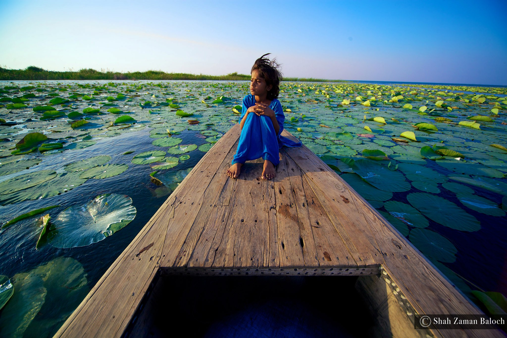
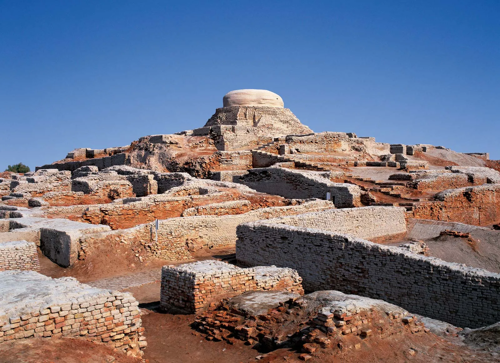

Tourist Hotspots!____________________
Pakistan offers a diverse range of tourist spots that cater to different interests, including historic landmarks, scenic natural wonders, vibrant cities, and cultural experiences. |
Northern / North Western____________________
Some of the must-visit places in the area include the Hunza Valley, with its stunning mountain scenery and hospitable locals, and the Skardu Valley, which is renowned for its snow-capped peaks and turquoise lakes.
Other popular destinations include the Fairy Meadows, a picturesque alpine meadow surrounded by towering peaks, and the Khunjerab Pass, one of the world's highest paved border crossings. Visitors can also explore the ancient city of Taxila, a UNESCO World Heritage site that dates back to the 6th century BC. |
 |
|  |
Southern____________________
Visitors can explore the ancient city of Thatta, home to historical landmarks such as the Shah Jahan Mosque and Makli Necropolis, a UNESCO World Heritage site. The Keenjhar Lake, one of the largest freshwater lakes in Pakistan, is a serene spot to enjoy scenic views and indulge in water sports. The Ranikot Fort, the largest fort in the world, is another impressive sight, offering a glimpse into the region's rich history. |
Central____________________
The Harappa Museum and Archaeological Site is a must-visit for those interested in the Indus Valley Civilization and ancient history. The Katas Raj Temples, a complex of seven Hindu temples dating back to the 6th century AD, is also a popular attraction. In addition, the Khewra Salt Mine, the world's second-largest salt mine, offers a unique experience with its underground salt tunnels, salt lake, and beautiful salt crystals. |
 |